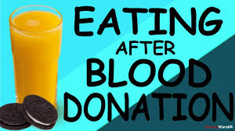

Home
About
Members
Reference
Gallery
Contact
Login
How much blood is taken in a blood donation?
During a regular donation, you will give around 470 ml of whole blood.
This is about eight per cent of the average adult's blood volume.
The body replaces this volume within 24 to 48 hours, and replenishes red blood cells in 10 to 12 weeks.

Type
YOU CAN GIVE BLOOD TO
YOU CAN RECEIVE BLOOD FROM
A+
A+,AB+
A+,A-,O+,O-
O+
O+,A+,B+,AB+
O+,O-
B+
B+,AB+
B+,B-,O+,O-
AB+
AB+
Everyone
A-
A+,A-,AB+,AB-
A-,O-
O-
Everyone
O-
B-
B+,B-,AB+,AB-
B-,O-
AB-
AB+,AB-
AB-,A-,B-,O-
Eatting Food After Blood Donation